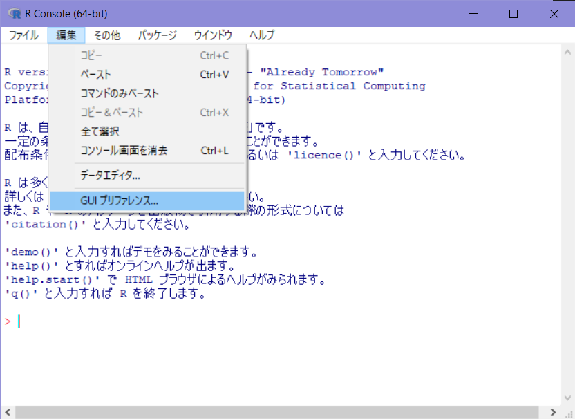
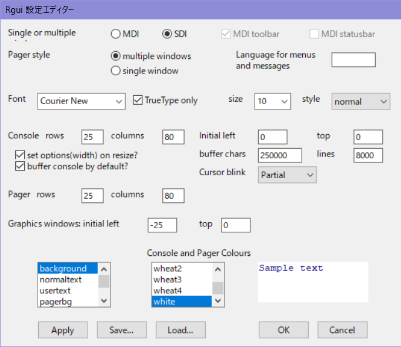
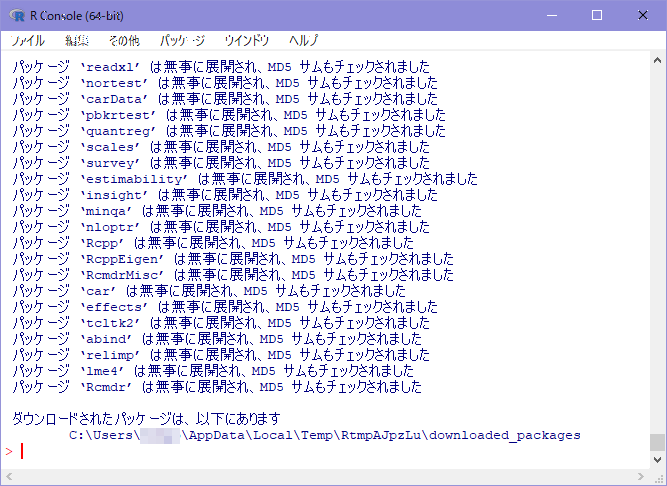
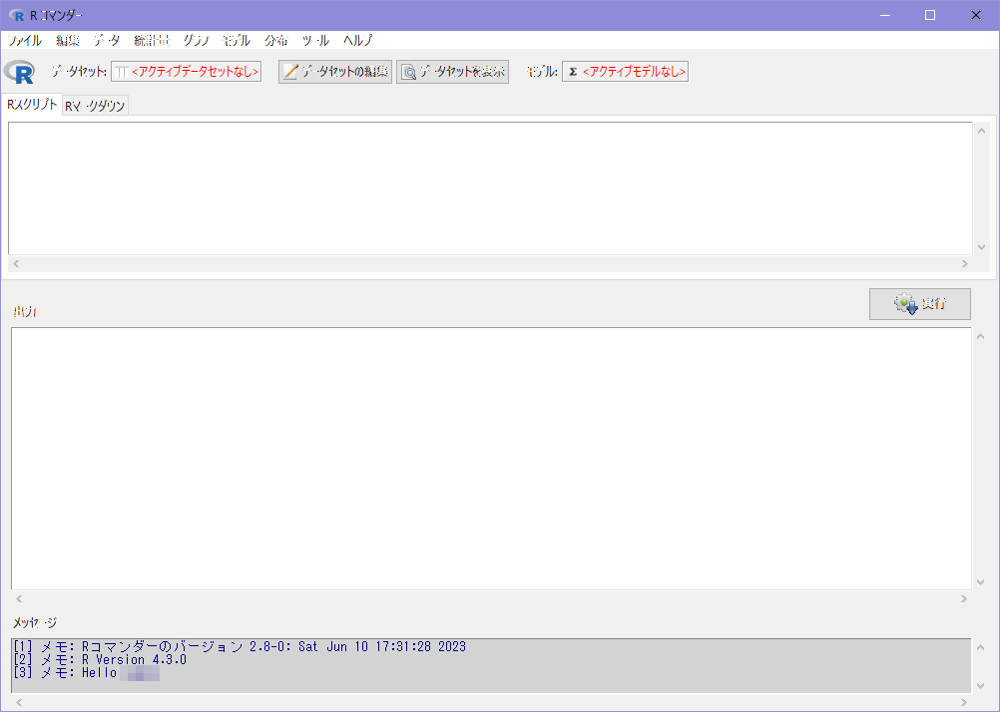
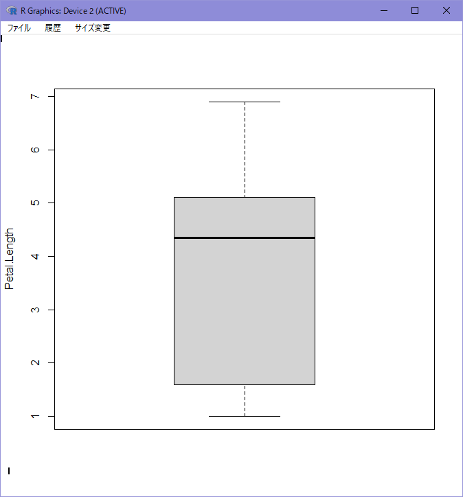

※本ページの内容はテキストの第２章に相当します
1 環境構築
本資料では2023年度データ分析勉強会の図書である『統計ソフト「R」超入門』逸見功著（以降、テキスト）で利用するR/R Commander環境を構築する方法を紹介しています。Windows環境のみが対象です。他のOSを利用したい場合はCRANにてインストール方法を確認してください。なお、本資料はR/R Commanderが動作することを保証するものではありません。
環境構築前に下記の条件を満たしていることを確認してください。
- 勉強会のセキュリティ・ポリシーを満たしているWindows PC
- Windowsは64bit環境1（Windows10 or Windows11）
- Windowsのユーザアカウント名に日本語や空白・記号が含まれてない2
- プロキシサーバーを介さずにインターネットと通信ができる
1 Rでの32bit環境のサポートは終了しています
2 日本語および空白・記号を含まず数字から始まらないアカウントを使用してください
環境構築の手順は下記の通りです。
- Rのインストール
- ダウンロード
- インストール
- 起動確認
- リカバリー（必要な場合のみ）
- R Commanderのインストール
- インストール
- 起動確認
- 動作確認
1.1 Rのインストール
テキストのP24から図解されていますので、図解が必要な場合はテキストを参照してください。
1.1.1 ダウンロード
Rのインストーラーをダウンロードします。
- CRANからRの最新版インストーラをダウンロードします
- ダウンロードしたファイルのウィルスチェックをします
書籍と同じバージョンを利用したい場合にはこちらからR4.2.2をダウンロードしてください。
1.1.2 インストール
Rのインストールではダイアログでの問い合わせに対して基本的にデフォルトを選択します。ただし、R Commnderを使いやすくするために起動時オプションの選択だけはデフォルトから変更します。
- ダウンロードしたファイル（インストーラ）を実行
- 以降、ウィザード形式の指示に従う
- インストール言語を選択
- ライセンスを確認
- インストール先を指定
- コンポーネントを選択
- 起動時オプションを選択
- 「はい(カスタマイズする)」を選択
- 「はい(カスタマイズする)」を選択
- スタートメニューフォルダーの指定
- 追加タスクの選択
- 「アイコンの追加」はお好みで選択
- インストール状況（プログレス表示）
- 完了
3 カスタマイズせずにデフォルトインストールした場合は下記のリカバリーを参考にSDIモードに変更してください
4 ヘルプの表示方法は好みで構いませんがHTML形式の方が関連項目のリンクが使えるので便利です
R Commanderを利用する場合は、操作ウィンドウやグラフ表示に個々のウィンドウを割り当てるSDIモードが便利です。インストール時にMDIを選択してた場合でもR起動後にオプションで変更できます。
1.1.3 起動確認
スタートメニューから［R］-［R 4.x.x］を実行し下図5のようなウィンドウが表示されることを確認します。
5 図はR4.3.0でバージョンにより表記が変わります。

RのウィンドウはそのままでR Commanderのインストールに進みます。
1.1.4 リカバリー（SDIモードへの変更）
MDIモードでインストールした場合は下記の手順でSDIモードに変更してください。
- Rのメニューから［編集］-［GUIプリファレンス…］を実行して設定エディタダイアログを開く

- 最上段にある［Sigle or multiple］で「SDI」にチェックを入れ［OK］ボタンをクリックする
 - Rを再起動する
1.2 R Commanderのインストール
テキストのP28から図解されていますので、図解が必要な場合はテキストを参照してください。
1.2.1 インストール
R Commanderは単独のプログラムではなくRのパッケージ（ライブラリ）として動く機能拡張プログラムですので、インストールはRから行います。
パッケージのインストール中に「パッケージのソースからインストールを行いますか？」のようなメッセージが表示された場合は「いいえ(No)」を選択してください。今回構築するWindows環境ではソースからのインストールに対応していません。なお、このメッセージはCRANのパッケージ更新状況によるので表示されない場合もあります。
- Rのメニューから［パッケージ］-［パッケージのインストール…］を実行
- パッケージをダウンロードするミラーサイトを選択して［OK］をクリック
- デフォルトの「0-Cloud[https]」を選択
- パッケージ一覧から「Rcmdr」を選択して［OK］をクリック
- パーソナルライブラリの利用確認
- 「Would you like to use a psersonal library instead」のダイアログが初回インストール時のみ表示されるので［はい(Y)］をクリック
- インストール先の確認
- 初回のみで［はい(Y)］をクリック
- パッケージダウンロードのプログレスが複数表示
- なにもしない
- R Commanderインストール完了

1.2.2 起動確認
R Commanderが起動することを確認します。
- Rのメニューから［パッケージ］-［パッケージの読み込み…］を実行
- 「Rcmdr」を選択
- 不足パッケージのインストール
- 「Rcmdrが利用する次のパッケージがありません」と初回起動時のみ表示されるので「はい(Y)」を選んでインストールする
- ダウンロード先の選択
- デフォルトの「CRAN」を選択
- R Commander起動
- Rに「以下のオブジェクトは ‘package:xxx’ からマスクされています」のメッセージが出ますが無視して構いません（問題ありません）

1.3 動作確認
以下はR Commanderウィンドウでの操作になります。
- メニューバーの下にある［データセット:］の部分が「<アクティブデータセットなし>」になっていることを確認
- メニューから［データ］-［パッケージ内のデータ］-［アタッチされたパッケージからデータセットを読み込む…］を実行
- ［データセット名を入力:］欄に「iris」と入力し［OK］をクリック
- メニューバーの下にある［データセット:］の部分が「iris」になっていることを確認
- メニューから［グラフ］-［箱ひげ図…］を実行
- ［変数］の「Petal.Length」をクリックし［OK］をクリック
- 別ウィンドウで箱ひげ図が描かれることを確認

1.4 留意事項
Rを起動すると下記のメッセージが表示されるように利用やその結果に対しては誰も何も保証することはありません。
R は、自由なソフトウェアであり、「完全に無保証」です。
したがって、利用に際しては結果などに疑問を感じた場合に自ら検証できる基本的な知識は必要です。